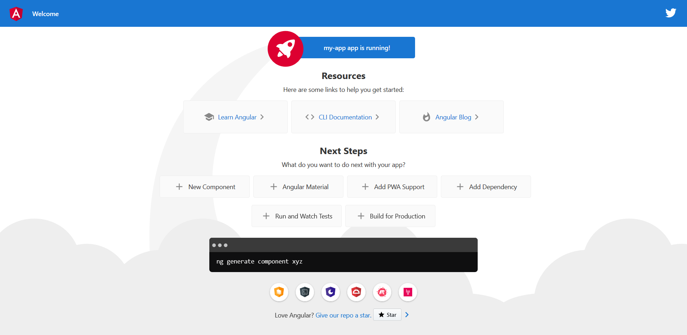
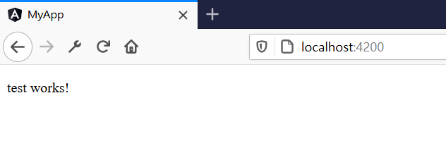
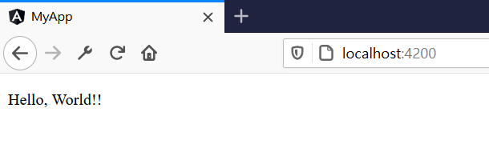
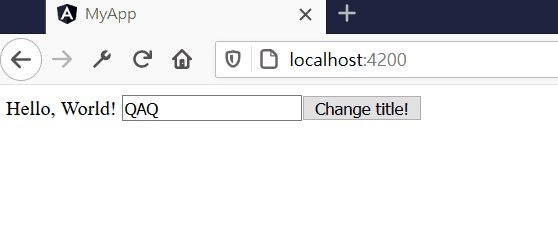
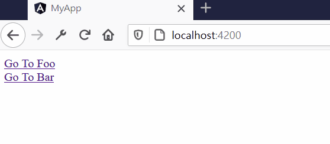
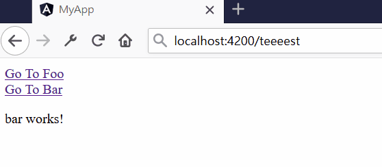

從今天開始系列最新作，沒方向的時候就是學framework的最好時機(？
參考資料:
首先安裝Angular CLI
# npm install -g @angular/cli
這樣就能使用Angular CLI的指令"ng"，這裡就直接建立一個project，stylesheet就選擇CSS好了，建立好之後就直接進入稍後要編集的目錄
$ ng new my-app
? Would you like to add Angular routing? Yes
? Which stylesheet format would you like to use?
> CSS
$ cd my-app
$ ng serve --open
...
** Angular Live Development Server is listening on localhost:4200, open your browser on http://localhost:4200/ **
: Compiled successfully.
Date: 2020-09-18T06:00:05.332Z - Hash: c048b12df6567723f106
5 unchanged chunks
Time: 1042ms
: Compiled successfully.
接下能就能到localhost:4200來看看編譯好的頁面

要動的東西大多都在src，附上目錄的樹狀圖
src
│ favicon.ico
│ index.html
│ main.ts
│ polyfills.ts
│ styles.css
│ test.ts
│
├─app
│ app-routing.module.ts
│ app.component.css
│ app.component.html
│ app.component.spec.ts
│ app.component.ts
│ app.module.ts
│
├─assets
│ .gitkeep
│
└─environments
environment.prod.ts
environment.ts
建立新的components，會產生下列檔案
$ ng generate component test
CREATE src/app/test/test.component.html (19 bytes)
CREATE src/app/test/test.component.spec.ts (612 bytes)
CREATE src/app/test/test.component.ts (267 bytes)
CREATE src/app/test/test.component.css (0 bytes)
UPDATE src/app/app.module.ts (537 bytes)
目錄看起來是這樣
...
│
└─test
test.component.css
test.component.html
test.component.spec.ts
test.component.ts
同時會自動在app.module.ts中import剛才建立的component
import { BrowserModule } from '@angular/platform-browser';
import { NgModule } from '@angular/core';
import { AppRoutingModule } from './app-routing.module';
import { AppComponent } from './app.component';
import { TestComponent } from './test/test.component';
@NgModule({
declarations: [
AppComponent,
TestComponent
],
imports: [
BrowserModule,
AppRoutingModule
],
providers: [],
bootstrap: [AppComponent]
})
export class AppModule { }
而component長得像是這樣
import { Component, OnInit } from '@angular/core';
@Component({
selector: 'app-test',
templateUrl: './test.component.html',
styleUrls: ['./test.component.css']
})
export class TestComponent implements OnInit {
constructor() { }
ngOnInit(): void {
}
}
selector的部分，也就是tag像這打的話就能指向component的內容
index.html預設是app-root，也就是剛才run的畫面，如果將index.html修改成下列這樣
<!doctype html>
<html lang="en">
<head>
<meta charset="utf-8">
<title>MyApp</title>
<base href="/">
<meta name="viewport" content="width=device-width, initial-scale=1">
<link rel="icon" type="image/x-icon" href="favicon.ico">
</head>
<body>
<app-test></app-test>
</body>
</html>
也將app.module.ts中的bootstrap array改成剛才建立的component
...
import { TestComponent } from './test/test.component';
@NgModule({
declarations: [
AppComponent,
TestComponent
],
imports: [
BrowserModule,
AppRoutingModule
],
providers: [],
bootstrap: [TestComponent]
})
export class AppModule { }
就會layout出TestComponent的template中的內容

在component中定義一個變數，並在constructor()下給予一個值
...
export class TestComponent implements OnInit {
title: string;
constructor() {
this.title = 'Hello, World!!';
}
ngOnInit(): void {
}
}
再修改tamplete
<p>{{ title }}</p>
就能顯示剛才給予的值了

一樣能使用ng來建立service
$ ng generate service test
接著修改test.service.ts，以console.log測試
import { Injectable } from '@angular/core';
@Injectable({
providedIn: 'root'
})
export class TestService {
log(msg: any) { console.log(msg); }
constructor() {
}
}
service可以用以下方式使用
import { Component, OnInit } from '@angular/core';
import { TestService } from '../test.service';
@Component({
selector: 'app-test',
templateUrl: './test.component.html',
styleUrls: ['./test.component.css'],
})
export class TestComponent implements OnInit {
title: string;
constructor(private Backend: TestService) {
this.title = 'Hello, World!';
this.Backend.log(this.title);
}
ngOnInit(): void {
}
}
值得注意的是service有階層化，若在@Injectable中，providedIn不是root的情形下，如範例
import { Injectable } from '@angular/core';
@Injectable({
providedIn: null
})
...
則component要依賴service的話，必須要在providers指定service
import { Component, OnInit } from '@angular/core';
import { TestService } from '../test.service';
@Component({
selector: 'app-test',
templateUrl: './test.component.html',
styleUrls: ['./test.component.css'],
providers: [TestService]
})
Property binding範例如下：
target property的value會綁定view model中的v
<input type="text" [value]="v">
Event binding範例如下：
範例中的target event為click，觸發後會執行後面的statement，範例為view model中的function changeTitle
<button (click)="changeTitle(v)">Click Me!</button>
Template reference variable範例如下：
範例中input會產生一個名為test的object HTMLInputElement，供template反覆利用
<input type="text" #test>
<button (click)="changeTitle(test.value)">Change title!</button>
Two-way binding範例：
value綁定變數v，而變數v又會透過event更新為test這個object的值，實現雙向綁定
<input type="text" #test [value]="v" (input)="v = test.value">
測試範例：
{{ title }}
<input type="text" #test [value]="v" (input)="v = test.value">
<button (click)="changeTitle(v)">Change title!</button>
...
export class TestComponent implements OnInit {
title: string;
v: string;
constructor(private Backend: TestService) {
this.title = 'Hello, World!';
this.Backend.log(this.title);
this.v = 'QAQ';
}
ngOnInit(): void {
}
changeTitle(v: string): void {
this.title = v;
}

一樣能用ng command自動建立
$ ng generate module app-routing --flat --module=app
剛建立的Routes是空的，routing由此定義
import { NgModule } from '@angular/core';
import { Routes, RouterModule } from '@angular/router';
const routes: Routes = [];
@NgModule({
imports: [RouterModule.forRoot(routes)],
exports: [RouterModule]
})
export class AppRoutingModule { }
直接建立兩個component
$ ng generate component foo
$ ng generate component bar
import剛才建立的component，並加到routes
import { NgModule } from '@angular/core';
import { Routes, RouterModule } from '@angular/router';
import { FooComponent } from './foo/foo.component';
import { BarComponent } from './bar/bar.component';
const routes: Routes = [
{ path: 'foo', component: BarComponent },
{ path: 'bar', component: FooComponent },
{ path: '**', redirectTo: '/' }
];
@NgModule({
imports: [RouterModule.forRoot(routes)],
exports: [RouterModule]
})
export class AppRoutingModule { }
將template改成以下的樣子
<div>
<a routerLink="foo">Go To Foo</a>
</div>
<div>
<a routerLink="bar">Go To Bar</a>
</div>
<router-outlet></router-outlet>
輸入不同的path(foo, bar)就會layout指定的component

若是使用routes以外的path，則會mapping到'**'，像範例會導回首頁

基礎練習大概就到此為止，下次大概就從Material UI到試做Login畫面了，Angular大概會成為個人做SPA的另一個選項